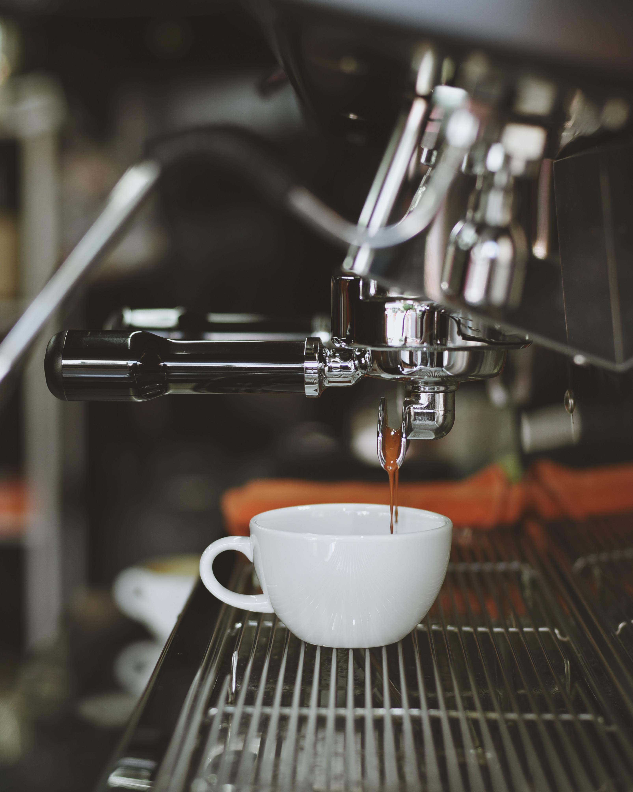
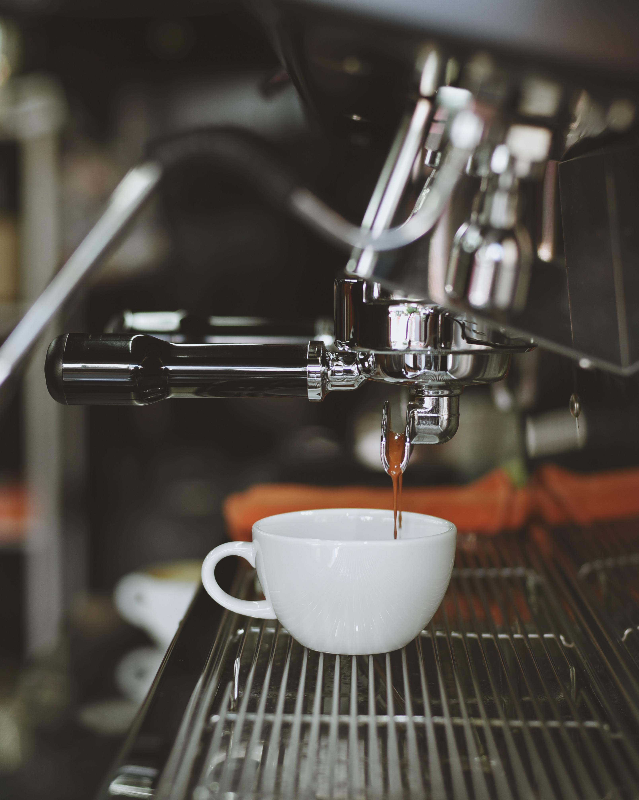

En pedido superior a $150
100% garantía de devolución de dinero
Ofrece bonos especiales con regalo
Llamenos 24/7 al 632535239
Mejores categorías
Café moca
Ver másCafé expreso
Ver másCapuchino
Ver másMejores productos
 



Disfruta de la Música con un café
Ya que hablamos de la sinergia que existe entre la música y el café, creo que es importante fundamentarlo también desde su perspectiva científica para que nos pueda ampliar aún más el panorama de su conexión. Es importante ver qué pasa en nuestro cerebro cuando consumimos café, de igual manera cuando escuchamos o creamos música. De acuerdo con un artículo de la CBC la música y el café son elementos que liberan dopamina en nuestro cerebro. Un neurotransmisor relacionado con la motivación y el deseo, mismo que hace que repitamos conductas agradables que contribuyen a nuestra felicidad, optimismo y creatividad. El café y la música, al ser dos elementos que generan dopamina (entre otras sustancias igual de importantes), su vínculo que existe se complementa, se hace más fuerte y se potencializa. Es por eso que los impulsos creativos, de energía, de optimismo y bienestar hacen que queramos repetir una y otra vez esta experiencia.